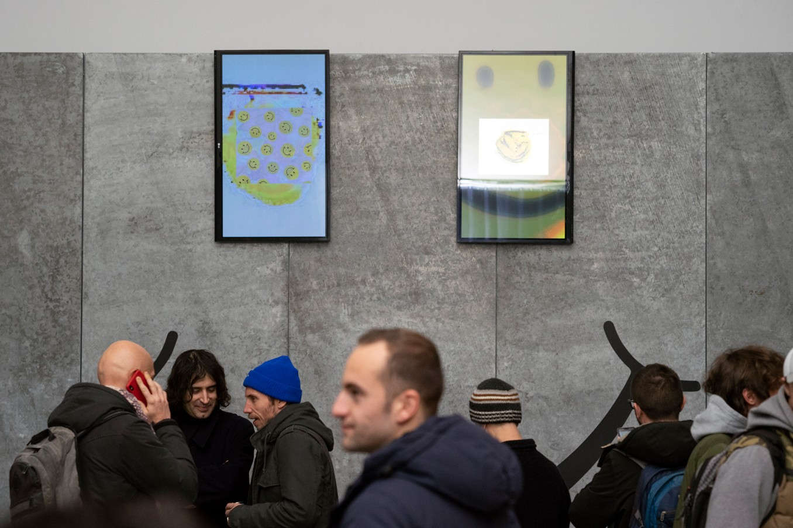
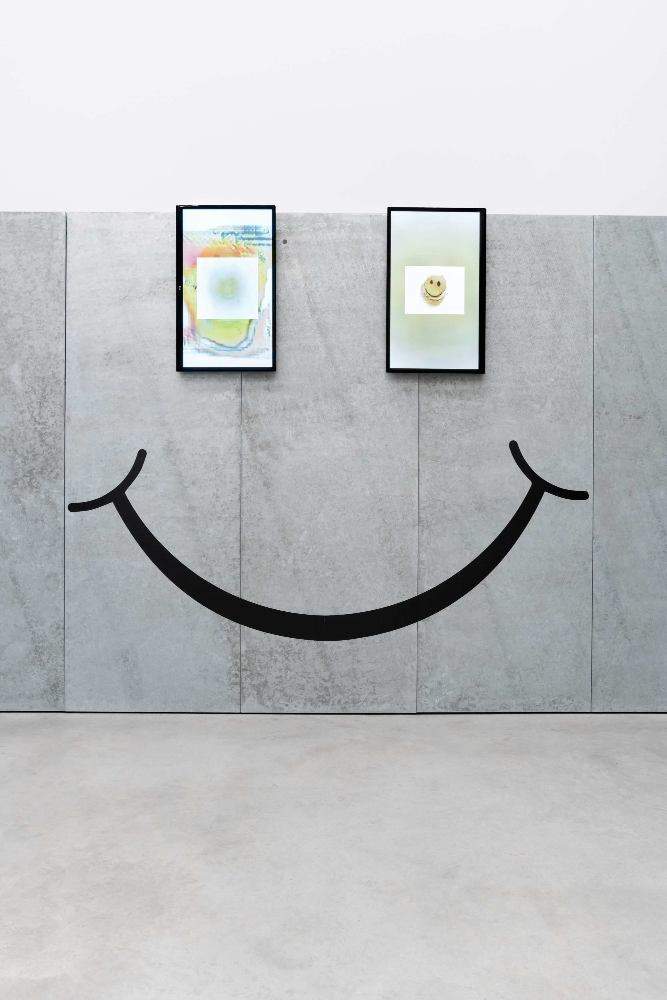

- 

- 


As part of the Carhartt WIP Magazine issue 04, I assisted CMP Office who developed a contribution on Synthetic Nostalgia dealing with Artificial Intelligence‘s interpretation of nostalgia and memory. I contributed technical expertise and developed a visual response in form of a diagram in order to democratise the practical understanding of a general audience lacking technical pre-knowledge. The design is influenced by the importance of simplification and visual underlining of context connections and relations explaining the process AI interpreting collective nostalgia. The dataset is generated by humans in form of 1602 donated images from the online archive of the Smile Face Museum in New York.